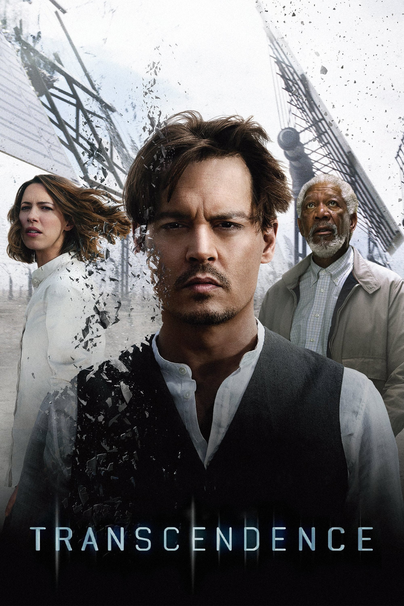

Мировая премьера: 18 апреля 2014
Слоган: Если был создан новый разум, то на что он способен?
Сюжет: Выдающийся исследователь в области изучения искусственного интеллекта доктор Уилл Кастер работает над созданием компьютера, который сможет собрать в себе все знания и опыт, накопленные человечеством. Достаточно спорные эксперименты, проводимые Уиллом, прославили его, и в то же время сделали основной целью радикальной анти-технологической группировки. Экстремисты делают всё возможное, чтобы остановить его. Однако в своих попытках уничтожить Уилла они добиваются обратного и становятся невольными участниками становления его абсолютного превосходства. Для его жены Эвелин и лучшего друга Макса Уотерса, тоже учёных-исследователей, встаёт вопрос – должны ли они продолжать этот эксперимент. Их худшие опасения претворяются в жизнь, когда жажда знаний Уилла переходит в неконтролируемую жажду власти, и предугадать, к чему это приведёт, становится уже невозможно.
Режиссёр: Уолли Пфистер
В ролях: |
Ребекка Холл | Доктор Эвелин Кастер |
| Джонни Депп | Доктор Уилл Кастер | |
| Пол Беттани | Доктор Макс Уотерс | |
| Морган Фриман | Доктор Джозеф Тэггер | |
| Киллиан Мёрфи | Агент Дональд Бьюкенен | |
| Кейт Мара | Бри Невинс | |
| Коул Хаузер | Полковник Стивенс | |
| Клифтон Коллинз мл. | Мартин | |
| Кори Хардрикт | Джоэл Эдмунд | |
| Джош Стюарт | Пол | |
| Фальк Хеншел | Боб |
Бюджет: $ 100 млн.
Кассовые сборы в США: $ 23 млн.
Кассовые сборы в мире: $ 103 млн.
Продолжительность: 1 ч. 51 мин.
Рейтинг: 6.2